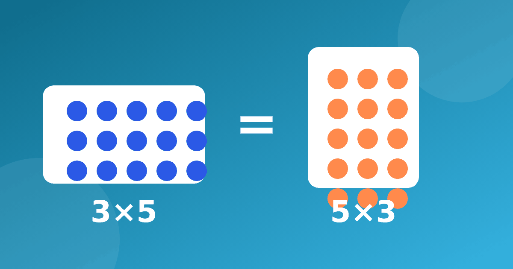

Меняем множители местами: как это упрощает таблицу

Когда ребёнок видит всю таблицу целиком, она кажется огромной. Но на самом деле примеров, которые нужно запоминать, заметно меньше. Причина в одном простом правиле. Переместительное свойство умножения говорит, что множители можно поменять местами, и ответ останется прежним.
Правило простыми словами
В учебниках его формулируют так, что от перестановки множителей произведение не меняется. Для ребёнка это звучит сложно, поэтому начните с примера. Если 3 × 8 = 24, то и 8 × 3 = 24. Ещё пара пар для проверки: 4 × 9 = 36 и 9 × 4 = 36, а также 7 × 6 = 42 и 6 × 7 = 42.
Попросите ребёнка самого придумать такую пару. Когда он находит её сам, правило запоминается лучше, чем после объяснения взрослого.
Почему это работает
Нарисуйте прямоугольник из клеточек, в котором три ряда по пять клеток. Всего получится 15 клеток, то есть 3 × 5 = 15. Теперь поверните лист. Будет пять рядов по три клетки, и 5 × 3 = 15. Клеток не прибавилось и не убавилось, просто мы смотрим на них с другой стороны.
Такая картинка убедительнее любых слов. Если у ребёнка не получается представить, нажмите в тренажёре кнопку «Показать визуально» и посмотрите на ряды предметов вместе.
Ту же мысль можно показать словами. «Три раза по пять» и «пять раз по три» звучат по-разному, а количество одно и то же.
Ещё один опыт можно провести на кухне. Разложите 12 печений в 3 ряда по 4 штуки, а затем в 4 ряда по 3 штуки. Печенья те же, ответ тот же, и 3 × 4 = 4 × 3 = 12.
Сколько примеров нужно выучить и как найти пары
Возьмём таблицу от 1 до 9. В ней 81 пример. Но из них 9 примеров — это квадраты вроде 5 × 5 или 7 × 7, а остальные 72 разбиваются на пары. Значит, различных фактов получается 9 плюс 36, то есть 45. Почти вдвое меньше, чем казалось.
Практический вывод для тренировки такой. Если ребёнок уже знает 4 × 7 = 28, то пример 7 × 4 учить заново не нужно. Достаточно помочь ему увидеть, что это тот же факт. Эту мысль мы развиваем и в статье про таблицу Пифагора для детей, где симметрия видна на листе.
Выпишите на листе десять примеров вперемешку, например 2 × 9, 5 × 8, 9 × 2, 4 × 6, 8 × 5, 7 × 3, 6 × 4, 3 × 7, 9 × 9 и 1 × 6. Пусть ребёнок найдёт пары с одинаковым ответом и подчеркнёт их одним цветом. Он обнаружит, что 2 × 9 и 9 × 2 стоят в одной паре, как и 5 × 8 с 8 × 5, 4 × 6 с 6 × 4 и 7 × 3 с 3 × 7. А 9 × 9 и 1 × 6 останутся без пары, потому что 9 × 9 — квадрат, а 6 × 1 в списке нет. Задание занимает минуты три и почти не требует подсчёта.
Оговорка про задачи
Честно нужно сказать и о границах. В записи задачи порядок множителей часто что-то значит. Например, «4 пакета по 6 яблок» и «6 пакетов по 4 яблока» дают одинаковый ответ, 24 яблока, но это разные ситуации. Учителя нередко просят записывать множители в определённом порядке, и ребёнку важно это выполнять. Подробнее о задачах рассказано в статье про текстовые задачи для 2 класса.
Другие свойства умножения для детей
Переместительное свойство не единственное. Другие свойства умножения для детей обычно вводят чуть позже, и знакомиться с ними можно без спешки.
- Сочетательное. Можно группировать множители по-разному, и (2 × 3) × 4 = 2 × (3 × 4) = 24.
- Распределительное. Число можно разбить на части, например 7 × 6 = 7 × 5 + 7 × 1 = 35 + 7 = 42.
Второе свойство особенно полезно, когда нужно вывести трудный пример из простого. Оно работает так же, как приёмы с пятёркой, о которых говорится в статье про умножение на 5 и 10.
Названия свойств ребёнку запоминать необязательно. Гораздо важнее, чтобы он на практике применял идею, что множители можно поменять местами, а число разбить на удобные части.
Как использовать на тренировке
- Выбирайте пары и проверяйте их вместе. Назвали 6 × 8, сразу спросите про 8 × 6.
- Хвалите не за скорость, а за то, что ребёнок заметил знакомую пару.
- Просите объяснить одним предложением, почему ответ в паре одинаковый.
Для таких заданий удобны карточки с примерами, где на одной стороне 6 × 8, а на другой 8 × 6. Когда ребёнок переворачивает карточку и видит тот же ответ, правило становится наглядным. Не требуйте от него безошибочности сразу. Свойство обычно усваивается после нескольких недель спокойных повторений, и это нормально.
Занимайтесь понемногу и регулярно. Сэкономленное время лучше потратить на те примеры, которые действительно не получаются.